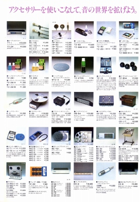

TEAC（ ティアック） カタログギャラリー
(カタログ画像をクリックすると原寸大のPDFファイルが開きます）
�@1980年2月アクセサリー総合カタログ
�A1982年6月総合カタログ
表紙のメインはオープンリールだがラインナップの先頭はカセットデッキ。

（ヘッドフォンの扱いはアクセサリーの片隅である）
�B1984年11月総合カタログ
表紙のメインもカセットデッキ。
�C1985年10月総合カタログ
表紙のメインはビデオ、ＣＤプレイヤー、ＬＤプレイヤー。ラインナップの先頭はＣＤプレイヤー。
ティアックのインデックスへ